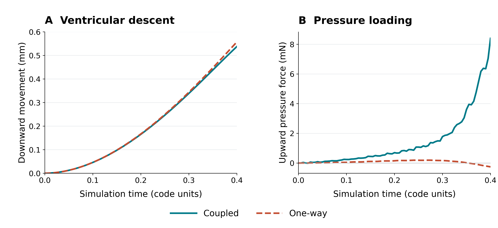

MaTiPS 2026 · Poster supplement
Towards Fluid–Structure Interaction Modelling of Vocal–Ventricular Fold Coupling in ArtiSynth Using the Lattice Boltzmann Method
Airflow in motion
Figure 1BScreen recording to be added
The initial airflow run shown in Figure 1B, with fixed fold boundaries. This is not a recording of moving-boundary FSI.
Exploratory coupling with gravity
Additional trialsGravity/contact check: a run to 5 code units with fixed LBM-derived loads and the legacy gravity setting produced load-bearing vocal–ventricular contact at about 0.45–0.46 code time. Airflow was not recomputed during that test, so it was not continuous FSI.
Moving-boundary attempt: both runs loaded the FEM with airflow pressure. The coupled run updated fluid boundaries, wall velocity and load mapping as the folds moved; the one-way run kept these at the initial geometry.

How to read this comparison
Downward movement averages free-node vertical displacement within each ventricular fold, then gives equal weight to the two sides. Pressure is the mean vertical resultant per ventricular fold, including loads at fixed nodes.
The 0–0.4 interval was selected after the coupled failure and before the control results. No load-bearing contact was recorded in either run in this interval. Each tracked vocal node’s displacement difference stayed below 0.001 mm in each plotted direction.
Why the result is inconclusive
| Run | Time* | Stopped by |
|---|---|---|
| Coupled | 0.650 | Fluid-density guard during the next update |
| One-way | 0.485 | Predicted node travel exceeded half a fluid cell per exchange |
*Code units; 1 code unit = 0.01 s (adopted convention).
- Large gravity-driven descent. The early feedback difference was small compared with the overall movement.
- The near-contact gap was poorly resolved. The coupled density hotspot lay in a gap about one cell wide. Resolution, cell refill and coupling errors were not separated.
- Calibration and convergence are still needed. The legacy gravity setting corresponds to 98 m/s² under the adopted units; neither run demonstrates physiological accuracy or self-sustained oscillation.
Numerical settings and next checks
The transient runs used a 100 Pa target pressure difference, ramped over 0.5 code units; 200 lattice updates per 0.005-code exchange; and an elevated effective kinematic viscosity of 1.67 × 10⁻⁴ m²/s.
The one-way stop was a mechanical-motion guard, not a fluid-density failure. The coupled rejected fluid field was not applied to the FEM. Coupled boundaries were updated at exchanges; newly fluid cells were refilled without strict mass conservation.
Next checks: calibrate units and gravity, equilibrate the initial tissue state, and test finer near-contact grids and shorter exchange intervals.